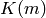
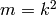
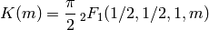
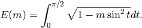
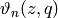
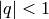
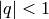
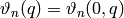
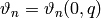
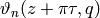

Elliptic functions¶
Elliptic integrals¶
ellipk()¶
- mpmath.ellipk(x, **kwargs)¶
Evaluates the complete elliptic integral of the first kind, , defined by

Note that the argument is the parameter , not the modulus
 which is sometimes used.
which is sometimes used.Alternatively, in terms of a hypergeometric function, we have:

Examples
Values and limits include:
>>> from mpmath import * >>> mp.dps = 25; mp.pretty = True >>> ellipk(0) 1.570796326794896619231322 >>> ellipk(inf) (0.0 + 0.0j) >>> ellipk(-inf) 0.0 >>> ellipk(1) +inf >>> ellipk(-1) 1.31102877714605990523242 >>> ellipk(2) (1.31102877714605990523242 - 1.31102877714605990523242j)
Verifying the defining integral and hypergeometric representation:
>>> ellipk(0.5) 1.85407467730137191843385 >>> quad(lambda t: (1-0.5*sin(t)**2)**-0.5, [0, pi/2]) 1.85407467730137191843385 >>> pi/2*hyp2f1(0.5,0.5,1,0.5) 1.85407467730137191843385
Evaluation is supported for arbitrary complex
 :
:>>> ellipk(3+4j) (0.9111955638049650086562171 + 0.6313342832413452438845091j)
A definite integral:
>>> quad(ellipk, [0, 1]) 2.0
ellipe()¶
- mpmath.ellipe(x, **kwargs)¶
Evaluates the complete elliptic integral of the second kind,
 , defined by
, defined by
Note that the argument is the parameter , not the modulus
which is sometimes used.Alternatively, in terms of a hypergeometric function, we have:

Examples
Basic values and limits:
>>> from mpmath import * >>> mp.dps = 25; mp.pretty = True >>> ellipe(0) 1.570796326794896619231322 >>> ellipe(1) 1.0 >>> ellipe(-1) 1.910098894513856008952381 >>> ellipe(2) (0.5990701173677961037199612 + 0.5990701173677961037199612j) >>> ellipe(inf) (0.0 + +infj) >>> ellipe(-inf) +inf
Verifying the defining integral and hypergeometric representation:
>>> ellipe(0.5) 1.350643881047675502520175 >>> quad(lambda t: sqrt(1-0.5*sin(t)**2), [0, pi/2]) 1.350643881047675502520175 >>> pi/2*hyp2f1(0.5,-0.5,1,0.5) 1.350643881047675502520175
Evaluation is supported for arbitrary complex
:>>> ellipe(0.5+0.25j) (1.360868682163129682716687 - 0.1238733442561786843557315j) >>> ellipe(3+4j) (1.499553520933346954333612 - 1.577879007912758274533309j)
A definite integral:
>>> quad(ellipe, [0,1]) 1.333333333333333333333333
Jacobi theta functions¶
jtheta()¶
- mpmath.jtheta(n, z, q, derivative=0)¶
Computes the Jacobi theta function , where
 , defined by the infinite series:
, defined by the infinite series:
The theta functions are functions of two variables:
 is the argument, an arbitrary real or complex number
is the argument, an arbitrary real or complex number is the nome, which must be a real or complex number
in the unit disk (i.e. ). For
is the nome, which must be a real or complex number
in the unit disk (i.e. ). For  , the
series converge very quickly, so the Jacobi theta functions
can efficiently be evaluated to high precision.
, the
series converge very quickly, so the Jacobi theta functions
can efficiently be evaluated to high precision.
The compact notations  and  are also frequently encountered. Finally, Jacobi theta functions are frequently considered as functions of the half-period ratio
 and then usually denoted by
and then usually denoted by  .
.Optionally, jtheta(n, z, q, derivative=d) with
 computes
a
computes
a  -th derivative with respect to .
-th derivative with respect to .Examples and basic properties
Considered as functions of
, the Jacobi theta functions may be
viewed as generalizations of the ordinary trigonometric functions
cos and sin. They are periodic functions:>>> from mpmath import * >>> mp.dps = 25; mp.pretty = True >>> jtheta(1, 0.25, '0.2') 0.2945120798627300045053104 >>> jtheta(1, 0.25 + 2*pi, '0.2') 0.2945120798627300045053104
Indeed, the series defining the theta functions are essentially trigonometric Fourier series. The coefficients can be retrieved using fourier():
>>> mp.dps = 10 >>> nprint(fourier(lambda x: jtheta(2, x, 0.5), [-pi, pi], 4)) ([0.0, 1.68179, 0.0, 0.420448, 0.0], [0.0, 0.0, 0.0, 0.0, 0.0])
The Jacobi theta functions are also so-called quasiperiodic functions of
and , meaning that for fixed ,
and  are the same
except for an exponential factor:>>> mp.dps = 25 >>> tau = 3*j/10 >>> q = exp(pi*j*tau) >>> z = 10 >>> jtheta(4, z+tau*pi, q) (-0.682420280786034687520568 + 1.526683999721399103332021j) >>> -exp(-2*j*z)/q * jtheta(4, z, q) (-0.682420280786034687520568 + 1.526683999721399103332021j)
The Jacobi theta functions satisfy a huge number of other functional equations, such as the following identity (valid for any
):>>> q = mpf(3)/10 >>> jtheta(3,0,q)**4 6.823744089352763305137427 >>> jtheta(2,0,q)**4 + jtheta(4,0,q)**4 6.823744089352763305137427
Extensive listings of identities satisfied by the Jacobi theta functions can be found in standard reference works.
The Jacobi theta functions are related to the gamma function for special arguments:
>>> jtheta(3, 0, exp(-pi)) 1.086434811213308014575316 >>> pi**(1/4.) / gamma(3/4.) 1.086434811213308014575316
jtheta() supports arbitrary precision evaluation and complex arguments:
>>> mp.dps = 50 >>> jtheta(4, sqrt(2), 0.5) 2.0549510717571539127004115835148878097035750653737 >>> mp.dps = 25 >>> jtheta(4, 1+2j, (1+j)/5) (7.180331760146805926356634 - 1.634292858119162417301683j)
Evaluation of derivatives:
>>> mp.dps = 25 >>> jtheta(1, 7, 0.25, 1); diff(lambda z: jtheta(1, z, 0.25), 7) 1.209857192844475388637236 1.209857192844475388637236 >>> jtheta(1, 7, 0.25, 2); diff(lambda z: jtheta(1, z, 0.25), 7, 2) -0.2598718791650217206533052 -0.2598718791650217206533052 >>> jtheta(2, 7, 0.25, 1); diff(lambda z: jtheta(2, z, 0.25), 7) -1.150231437070259644461474 -1.150231437070259644461474 >>> jtheta(2, 7, 0.25, 2); diff(lambda z: jtheta(2, z, 0.25), 7, 2) -0.6226636990043777445898114 -0.6226636990043777445898114 >>> jtheta(3, 7, 0.25, 1); diff(lambda z: jtheta(3, z, 0.25), 7) -0.9990312046096634316587882 -0.9990312046096634316587882 >>> jtheta(3, 7, 0.25, 2); diff(lambda z: jtheta(3, z, 0.25), 7, 2) -0.1530388693066334936151174 -0.1530388693066334936151174 >>> jtheta(4, 7, 0.25, 1); diff(lambda z: jtheta(4, z, 0.25), 7) 0.9820995967262793943571139 0.9820995967262793943571139 >>> jtheta(4, 7, 0.25, 2); diff(lambda z: jtheta(4, z, 0.25), 7, 2) 0.3936902850291437081667755 0.3936902850291437081667755
Possible issues
For
 or
or  , jtheta() raises
ValueError. This exception is also raised for
, jtheta() raises
ValueError. This exception is also raised for  extremely
close to 1 (or equivalently very close to 0), since the
series would converge too slowly:
extremely
close to 1 (or equivalently very close to 0), since the
series would converge too slowly:>>> jtheta(1, 10, 0.99999999 * exp(0.5*j)) Traceback (most recent call last): ... ValueError: abs(q) > THETA_Q_LIM = 1.000000